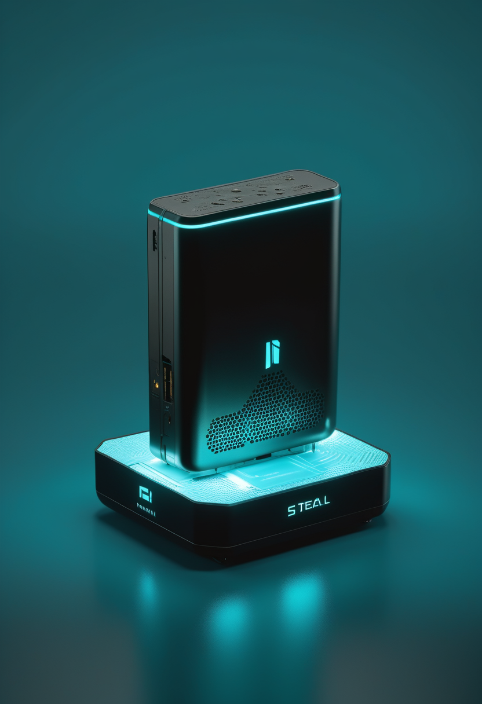
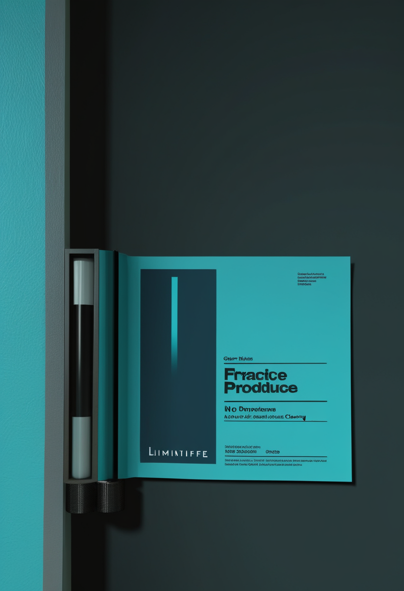
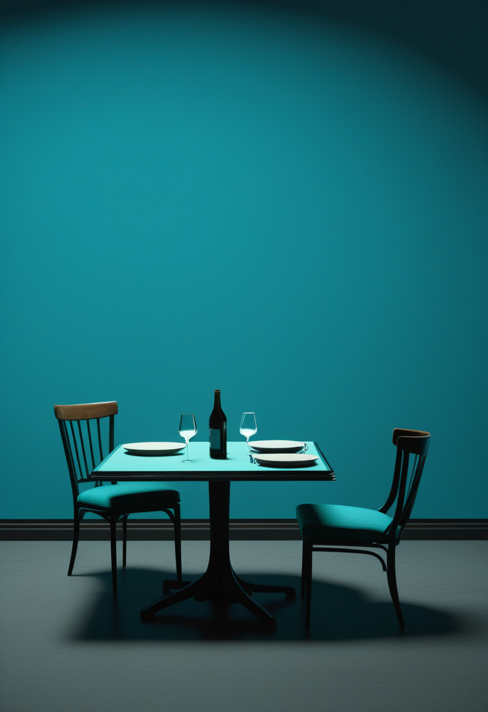
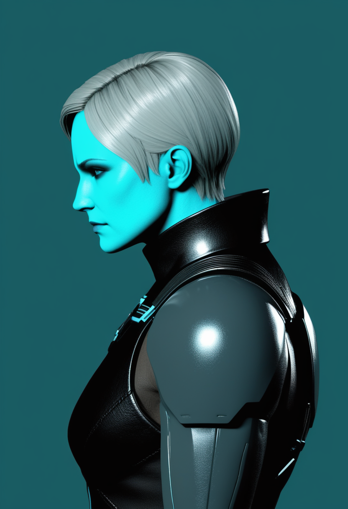

月曜日の便り。ウガンダ保健省は7月28日、5月15日の流行確認からわずか74日、最終患者退院から12日でBundibugyo型エボラウイルス病の終息を宣言した。一方、震源地であるコンゴ民主共和国(DRC)では8月4日時点で確定3,973例・死者1,801例(致死率約45%)に達しており、Africa CDCとWHOは共同視察を経て8月6日、コミュニティ主導の対応強化を緊急に呼びかけている。同じ流行から明暗が分かれた形だ。自由の章では、視線センシングのSeeTrue社が225万ユーロを調達し、独Ability Neurotechが完全埋め込み型BCIの初ヒト試験を実施、中国では「NEO」の承認後初となる商業ベースの埋め込み手術が上海・華山医院で完了した。命の章では、SMA治療薬apitegromabについて、症状発症から5年以内・SMN標的治療開始から2年以内という早期治療の目安が運動機能改善の大きさを左右することを示すデータが積み上がっている。畏敬の章では、CERNが量子センシングの国際研究所を8月末に開催する一方、台風で延期が続くみちびき7号機の打ち上げは天候条件が整わず8月11日へ再延期された。そして美の章では、人間の認知をモデル化する「認知デジタルツイン」がもたらす倫理的リスクを問う論文と、生成AIへの依存が実行機能を弱める行動証拠を示す研究が並ぶ ― 制度・技術ともに、前進と足踏みが同居する一日となった。
ウガンダ保健省は7月28日、「本日をもってウガンダはエボラから解放された」と宣言し、5月15日の流行確認からわずか74日、最終患者退院(7/16)から12日でBundibugyo型エボラの終息を発表した(確定20例・回復18例・死者2例)。一方、震源地であるコンゴ民主共和国(DRC)では8月4日時点で確定3,973例・死者1,801例(致死率約45%)に達し、Africa CDCとWHOは8月4〜5日の共同視察を経て8月6日、コミュニティ主導の対応強化を緊急に呼びかけた。同じ流行から明暗が分かれた形だ。
ミシガン州など複数の自治体が8月1日、2026年の「脊髄性筋萎縮症(SMA)啓発月間」を宣言した。筋ジストロフィー協会(MDA)は8月26日、SMAの最新研究・治療戦略・支援体制をテーマにしたオンラインウェビナー「Spotlight On: Spinal Muscular Atrophy」を開催すると予告している。
3月開催のMDA臨床科学会議で発表されたSAPPHIRE試験のpost hoc解析によれば、apitegromab投与群はプラセボ群と比べHFMSEスコアが平均1.8ポイント高く、症状発症から5年以内に治療を開始した群では平均2.1ポイントの改善が確認された。事前のSMN標的治療期間が2年以内の患者ではプラセボ差が平均2.9ポイントに達しており、早期介入の重要性を示すデータとして注目されている。
SMA領域は啓発活動と治療データの両輪で動く一日となった ― apitegromabの早期治療効果は「発症から何年以内か」「SMN標的治療から何年以内か」という具体的な目安まで明らかになりつつあり、早期診断・早期介入という好循環をさらに裏付けている。
フィンランドのディープテック企業SeeTrue Technologiesは8月5日、超低消費電力の視線センシング技術の商業化に向け、ZEISS Venturesが主導する225万ユーロの資金調達を発表した。スマートアイウェアや医療・産業向けの次世代視線インターフェースへの応用を見込む。

ドイツのAbility Neurotechは、ミュンヘン工科大学附属病院で、無線光リンク方式の完全埋め込み型BCIの初ヒト試験(ファースト・イン・ヒューマン)を実施したと発表した。脳腫瘍手術を受ける患者5名を対象に術中20〜30分間の神経信号を記録するもので、5月にはオランダの倫理委員会からALS患者への長期埋め込み試験の承認も取得済み。

中国国家薬品監督管理局(NMPA)が3月13日に世界初の侵襲型BCI医療機器として商業承認した「NEO」(Neuracle社製、頸髄損傷者向け手指機能補助)について、共同臨床試験を主導した華山医院が7月13日、承認後初となる商業ベースでの埋め込み手術を完了した。
視線入力(非侵襲・低コスト)は資金調達という形で商業化への足場を固め、埋め込み型BCIは初ヒト試験と承認後初の商業手術という異なるフェーズの実装が同時に進んだ ― 「読み取る技術」と「埋め込む技術」がそれぞれの速度で実用化に近づいている。
ウガンダ保健省は7月28日、5月15日の流行確認から74日、最終患者退院(7/16)から12日でBundibugyo型エボラウイルス病の終息を宣言した(確定20例・回復18例・死者2例)。一方、震源地のDRCでは8月4日時点で確定3,973例・死者1,801例(致死率約45%、51保健区)に達しており、Africa CDCとWHOは8月4〜5日にウガンダ・DRCへ共同視察団を派遣、8月6日に早期発見・接触者追跡・最前線人材支援の強化を緊急に呼びかけた。次の節目は8月18日のIHR緊急委員会。

米CDCは、メキシコ・シナロア州産ハラペーニョ(Coast Citrus Distributors社が流通)を感染源とするサルモネラ・ジャビアナ菌の集団感染について、27州で確定345例(入院36例、死者なし)に達したと発表した。感染者の93%がChipotleやQdobaなどメキシコ料理店での喫食歴を報告しており、ミネソタ・コロラド両州が各110例と突出している。
同じエボラ流行でもウガンダは74日で終息、DRCは4,000例目前と明暗が分かれた ― コミュニティ主導の早期発見・追跡体制の有無が転帰を分けたとAfrica CDC/WHOは分析している。食品由来の集団感染は流通経路の特定という地道な追跡作業が続く。
CERNの理論部門は8月31日から9月11日にかけ、基礎物理学のための量子センシングをテーマとした国際研究所(Theoretical Institute)を開催する。原子干渉計実験(AICE)やアクシオン検出器実証機など、CERN関連プロジェクトと量子センサー技術の接続を強化する狙い。
JAXAは、H3ロケット9号機による準天頂衛星「みちびき」7号機の打ち上げについて、8月10日の予定日でも打ち上げに必要な気象条件が整わないとして、8月11日4時00分〜5時30分(日本時間)へ再設定したと発表した。8月11日についても条件が整わない可能性が残っており、予備期間として8月12〜31日・9月3〜30日が確保されている。
量子センシングは複数の実験基盤を束ねる研究所という「制度づくり」の一歩、みちびき7号機は天候という制御できない要因に打ち上げ日を委ね続ける ― どちらも一足飛びではない、地道な積み重ねの局面にある。
Vamshi Krishna Bonagiri氏らの研究チームは6月23日、人間の認知をモデル化するAIシステム「認知デジタルツイン」がもたらす倫理的リスクとガバナンスの枠組みを検討する論文をarXivに公開した。個人の思考パターンを模倣するAIの誤用や同意なきプロファイリングのリスクを指摘し、規制の必要性を論じている。

米国心理学会(APA)の会報「Monitor on Psychology」は7月1日号で、生成AIへの依存が実行機能(計画・判断・自己制御)にどう影響するかを検証した最新研究群を紹介した。高頻度利用者において認知的オフロード(AIへの思考の委任)の行動的証拠が確認されたとする研究などが挙げられている。
「思考をどこまで模倣させるか」という工学的野心と、「委ねすぎた思考がどう弱るか」という足元の懸念が、デジタル化領域では並走し続けている ― どちらも、まだ答えの出ていない問いである。
2026年7月28日、ウガンダ保健省はエボラ流行の終息を宣言した ― 5月15日の流行確認からわずか74日、コミュニティ主導の早期発見・追跡体制が功を奏した形だ。震源地DRCでは8月4日時点で確定3,973例・死者1,801例に達し、Africa CDCとWHOが8月6日、対応強化を緊急に呼びかけている。自由の章では、視線センシングのSeeTrue社が資金調達を発表し、独Ability Neurotechの完全埋め込み型BCIが初ヒト試験を迎え、中国の「NEO」は承認後初の商業手術を上海で完了した。命の章ではSMA治療薬apitegromabの早期治療効果が治療開始時期別に精緻化され、畏敬の章ではCERNの量子センシング研究所開催予告とみちびき7号機の再延期が並んだ。そして美の章では、認知をモデル化する技術の倫理的リスクと、AI依存が実行機能を弱める行動証拠が、工学的な前進の先にある問いを浮かび上がらせた。
では、また明日の朝に。 — JaH